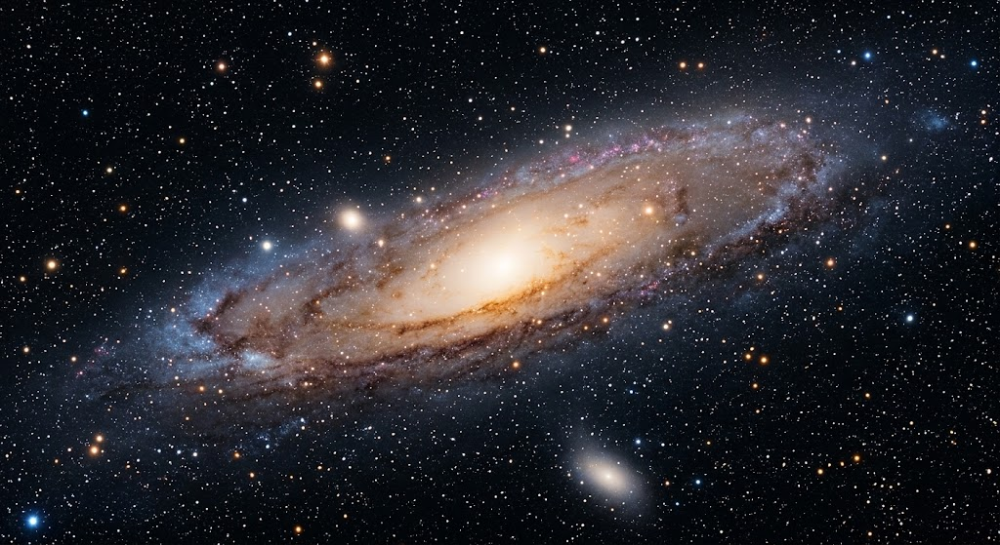

เอกภพและกาแล็กซี
♾️เอกภพ (Universe) คือ ทุกสิ่งทุกอย่างที่มีอยู่ทั้งอวกาศ เวลา สสาร พลังงาน ดาวฤกษ์ ดาวเคราะห์ กาแล็กซี และวัตถุท้องฟ้าต่างๆ โดยเอกภพมีขนาดใหญ่มากและกำลังขยายตัว
ㅤ
🌌กาแล็กซี (Galaxy) คือ กลุ่มของดาวฤกษ์ ระบบดาว ก๊าซ ฝุ่น และสสารมืดจำนวนมหาศาลที่รวมตัวกันด้วยแรงโน้มถ่วง กาแล็กซีหนึ่งแห่งสามารถมีดาวฤกษ์ได้ตั้งแต่หลายล้านดวงไปจนถึงหลายล้านล้านดวง
🔭 ประเภทของกาแล็กซี กาแล็กซีแบบกังหัน (Spiral Galaxy) มีแขนกังหันหมุนรอบบริเวณใจกลาง เช่น ทางช้างเผือก กาแล็กซีแบบวงรี (Elliptical Galaxy) มีรูปร่างกลมหรือรี มักมีดาวฤกษ์อายุมากจำนวนมาก กาแล็กซีแบบไม่ปกติ (Irregular Galaxy) ไม่มีรูปร่างที่แน่นอน มักเกิดจากการรบกวนหรือการชนกันของกาแล็กซี
ㅤ
🌍 โลกของเราอยู่ที่ไหน? โลกอยู่ใน ระบบสุริยะ ซึ่งอยู่ภายใน กาแล็กซีทางช้างเผือก (Milky Way Galaxy) และทางช้างเผือกก็เป็นเพียงหนึ่งในกาแล็กซีจำนวนมหาศาลที่อยู่ในเอกภพ